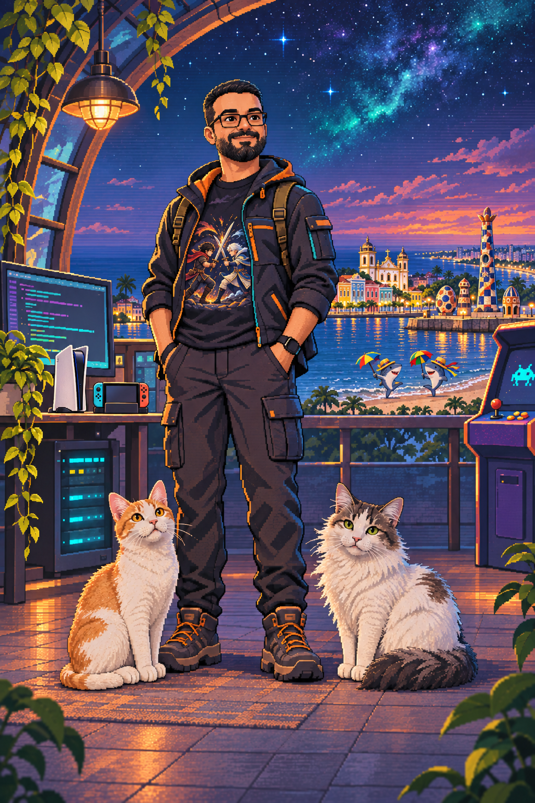

Full stack com Angular
Experiência de frontend com Angular e construção de aplicações web de ponta a ponta.
Engenharia de software · full stack
Atuo do frontend com Angular ao backend com Java, Spring, APIs e microsserviços em AWS. No dia a dia, uso Devin, Codex e Antigravity com diferentes modelos, MCPs e skills, ajustando o contexto para cada tarefa. Também estudo segurança e levo o conceito Shift Left para o código e para a squad. Fora do trabalho: games, Denguinho e Pandora.

Pixel art original, com referência ao Parque de Esculturas Francisco Brennand.
Perfil full stack: do frontend em Angular a sistemas distribuídos, com segurança integrada ao ciclo de desenvolvimento.
Experiência de frontend com Angular e construção de aplicações web de ponta a ponta.
Java, Spring, APIs REST e microsserviços para resolver problemas reais.
Uso de serviços AWS para arquiteturas robustas, escaláveis e confiáveis.
Mensageria e processamento assíncrono para manter serviços eficientes sob carga.
Estudo cursos de segurança e aplico Shift Left com a squad, trazendo segurança para o código e para o fluxo de desenvolvimento.
Uso Devin, Codex e Antigravity, além de diferentes modelos, MCPs e skills, com contexto direcionado para cada tarefa.
Práticas ágeis, Scrum e Kanban, com colaboração e entrega contínua.
MARCO VERIFICADO · Credencial Security Engineer — Cybersecurity Guardian, emitida pelo Itaú Unibanco.
Ferramentas e ideias que aparecem no meu trabalho.
Angular no frontend; Java, Spring, Golang, Python, APIs REST e microsserviços no backend.
AWS, mensageria, sistemas assíncronos e arquitetura limpa.
Estudo contínuo em segurança e aplicação do conceito Shift Left no código e na squad.
Devin, Codex, Antigravity, múltiplos modelos, MCPs e skills com contexto bem definido.
Videogame é diversão, curiosidade e combustível para voltar ao próximo desafio.
Para conhecer minha trajetória profissional completa, ver recomendações ou falar sobre oportunidades, passe no LinkedIn.